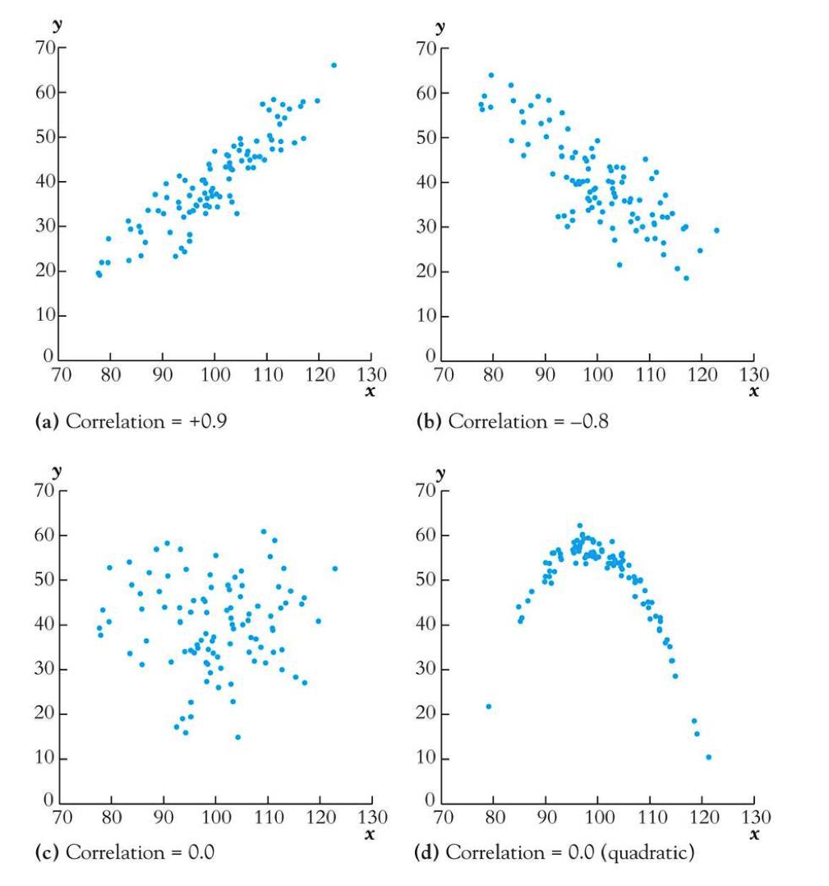
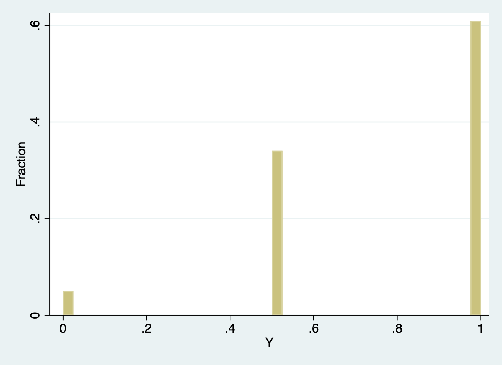
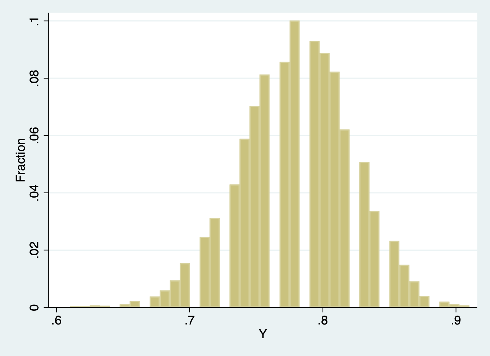

Appendix A — Reviewing probability and statistics
This appendix very briefly reviews the statistical knowledge you need for applied econometrics. We assume you had an introductory course in statistics already and will go over this material very quickly.
A.1 Reviewing probability
A.1.1 Probability
As a definition of probability we use the concept of empirical probability which is the proportion of time that something (a specific outcome or event \(X\)) occurs in the long-run of total events. Usually it is give by:
\[\begin{equation} \text{probability} = p = \frac{\text{Number of times specific event $X$ happens}}{\text{Total amount of events that can happen}} \end{equation}\]
Now probabilities are defined by a set of definations (axioms). These are:
- Probabilities, \(p\), are always between 0 and 1. So, \(0 \leq p \leq 1\)
- If something does not happen, then \(p = 0\)
- If something always happens, then \(p = 1\)
- Probabilities for the total amount of events always add up to \(1\). So, if the probability that something happens is \(p\), then the probabilities that it will not happen is \(1 -p\) (see that \(p + 1 - p = 1\))
A.1.2 Population & random variables
In general we see a population as the the group or collection of all possible entities of interest (school districts, inhabitants of the Netherlands, homeowners) and we will think of populations as infinitely large (\(\infty\)). From this population we then sample specific observations. This sample contains then a random variable \(Y\), which denotes a characteristics of the entity (district average test score, prices of houses, prices of meat). An important feature is that the sample characteristics are unknown, that is before measurement (\(y\)), after measurement the sample is know and is called data.
So, a random variable (also called a stochastic variable) is a mathematical formalization of something that depends on random outcomes. Unfortunately, randomness is not clearly defined and depends on specific scientific philosophical schools. The scientific philosophical school we implicitly assume in this course—and, in fact, in most statistical courses—is that of frequentist statistics. Here we assume that all things we measure are intrinsically random. In fact, this is an ontological argument—in other words, what are our beliefs in the state of the world. Because all things we measure are random, every time we measure something our measurements are (slightly) different. However, the more we measure, the more precise we know something. But there is still randomness.
In general, there are two types of random variables. First, there are discrete random variables, where outcomes can be counted, such as \(0, 1, 2, 3, \ldots\) and continuous random variables, where outcomes can be any real number.1
A.1.3 Distribution functions
Random variables are governed by distribution functions which are mathematical function that provides the probabilities of occurrence of all different possible outcomes of the random variable experiment: e.g. for a discrete distribution, \(f(x) = \Pr(Y = y)\) \(\forall y\). Or, in other words, the distribution function maps discrete outcomes to probabilities. For continuous distribution function, this is not possible as there an infinite number of possible outcomes, so that means that for each \(y\) must yield \(\Pr(Y = y) = 0\). Therefore, with continuous distribution, often the cumulative distribution function is used, which is defined as \(F(x) = \Pr(Y \leq y)\). This is why we always use the surface of areas under the normal distribution function.
Distribution functions have characteristics of which the most important are: - The mean, also known as the expected value (or expectation) of \(Y\). It is usually denoted as \(E(Y) = \mu_Y\) and can as well be interpreted as the long-run average value of \(Y\) over repeated realizations of \(Y\): \(\frac{1}{n}\sum_{i = 1}^{n}y_{i}\)
- The variance, which is denoted as \(E(Y - \mu_Y)^2\). Usually it is associated with \(\sigma^2_Y\) and provides a measure of the squared spread of the distribution. If we take the square root then we have the standard deviation (\(=\sqrt{\text{variance}} = \sigma_Y\)). For a symmetrical normal distribution, it is useful to know that the mean plus or minus 1 time the standard deviation governs about \(2/3\) of all probability while the mean plus or minus 2 times the standard deviation governs about 95% of all probability associated with that random variable.
Now in statistics we are usually related in relations between random variables, and luckily most entities in real life are related. To capture the relation we need two concept, joint distributions and covariance. If we assume that that random variables \(X\) and \(Z\) have a joint distribution then the covariance between \(X\) and \(Z\) is: \[\begin{equation} cov(X,Z) = E[(X- \mu_X)(Z- \mu_Z)] = \sigma_{XZ} \end{equation}\]
Note that this covariance is a measure of the linear association between \(X\) and \(Z\) and that its units are units of \(X\) times units of \(Z\). \(cov(X,Z) > 0\) means a positive relation between \(X\) and \(Z\), and finally if \(X\) and \(Z\) are independently distributed, then \(cov(X,Z) = 0\). Note that the covariance of a random variable with itself is just its variance: \[\begin{equation} cov(X,X) = E[(X-\mu_X)(X - \mu_X)] = E[(X - \mu_X)^2] = \sigma^2_X \end{equation}\]
However, the covariance is still measured in the units of \(X\) and \(Z\). To correct for that, we often use the correlation coefficient, defined by: \[\begin{equation} corr(X,Z) = \frac{cov(X,Z)}{\sqrt{var(X)var(Z)}} = \frac{\sigma_{XZ}}{\sigma{_X}\sigma{_Z}} = r_{XZ} \end{equation}\] where \(-1 \leq corr(X,Z) \leq 1\), a \(corr(X,Z) = 1\) means perfect positive linear association, a \(corr(X,Z) = -1\) means perfect negative linear association, and a \(corr(X,Z) = 0\) denotes no linear association.

It is very important to notice that a correlation coefficient measures linear association. So, \(corr(X,Z) = 0\) does not mean that there is no relation, there is only no linear correlation. This is illustrated by figure @ref(fig:corrcoef). In panel (a) there is clearly a positive relation, and panel (b) shows a negatve relation, but what about panel (d)? Here, the correlation coefficient is 0, just as in panel (c), but obviously there is a clear non-linear relation.
A.1.4 Conditional distributions and conditional means
An important notion is applied statistics (and in applied econometrics) is that of the condition distributions, that is the distribution of \(Y\), given value(s) of some other random variable, \(X\). For example, in our California school example, we might want to know something about the distribution of test scores, given that \(STR < 20\). Therefore, we use the concept of conditional mean, which is defined as the mean of a conditional distribution = \(E(Y|X = x)\). Note here the \(|\) symbol—it means given that a random variable \(X\) is measured with \(x\). As an example: \(E(Test scores|STR < 20)\) which denotes the mean of test scores among districts with small class sizes. We also denote this with the conditional mean.
Now, if we want to know the difference in means, then we can denote that with \[\begin{equation} \Delta = E(Test scores|STR < 20)- E(Test scores|STR \geq 20), \end{equation}\] which is a very important concept in applied economics as it resembles two groups of which one received treatment and the other one not. Other examples of the use of conditional means: difference in wages among gender (glass ceiling) and mortality rate differences between those who are treated and those who are. Now if \(E(X|Z)\) is constant, then \(corr(X,Z) = 0\). We then say that \(X\) and \(Z\) are independent.
A.2 Sampling in frequentist statistics
So, we mentioned above that we sample from the population which is assumed to be infinitely large. Now, how does this sampling then carry over to statistics. For that we need a statistical framework based on random sampling. First, choose an individual, \(i\), (or district, firm, etc.) at random from the population. Now, prior to sample selection, the value of what we want to know \(Y_i\) is random because the individual selected is random. Once the individual is selected and the value of \(Y\) is observed, then \(Y\) is just a number—not random anymore but data. And then we say it has the value \(y\). Hence the notation \(\Pr(Y = y\)).
If we sample multiple entities, the we construct a data set that looks like \((y_1, y_2,\dots, y_n)\), where \(y_i\) = value of \(y\) for the \(i^{\mathrm{th}}\) individual (district, entity) sampled. Again the lower case here denotes a realisation—the dataset. Now, we want to know what the distribution of the random variables \(Y_1\),, \(Y_n\) is under simple random sampling. Note that because entities (say individuals) #1 and #2 are selected at random, the value of Y\(_1\) has no information content for \(Y_2\). Thus: \(Y_1\) and \(Y_2\) are independently distributed. And if \(Y_1\) and \(Y_2\) come from the same distribution, that is, \(Y_1\), \(Y_2\) are identically distributed, then we say that, under simple random sampling, Y\(_1\) and Y\(_2\) are independently and identically distributed (i.i.d.). More generally, under simple random sampling, Y\(_i\), \(i = 1,\ldots, n\), are i.i.d—this term always come back in all sorts of statistics.
This simple framework already allows rigorous statistical inferences about, e.g., the mean \(\bar{Y}\) of population distributions using a sample of data from that population. The next subsection does this because the mean is not only an important, but mainly because the results immediately can be transferred to the regression context.
A.2.1 The sampling distribution of \(\bar{Y}\)
Now because \(\bar{Y}\) is formed by a sample of \(\{Y_i\}'s\) it is as well a random variable, and its properties are determined by the sampling distribution of \(\bar{Y}\). Again, we assume that the elements in the sample are drawn at random, that thus the values of \((Y_1,\ldots, Y_n)\) are random, and that thus functions of \((Y_1,\ldots, Y_n)\), such as \(\bar{Y}\), are random: had a different sample been drawn, they would have taken on a different value. Finally, the distribution of \(\bar{Y}\) over different possible samples of size \(n\) is called the sampling distribution of \(\bar{Y}\), which underpins all of frequentists statistics.
A.2.2 Example: simple binomial random variables
So how this work. Let’s take the easiest statistical example: coin flipping, where the coin is this case is notoriously biased. Suppose the random variable \(Y\) takes on 0 (head) or 1 (tails) with the following probability distribution, \(\Pr[Y = 0] = 0.22\), \(\Pr(Y =1) = 0.78\). Then the mean and variance are given by: \[\begin{eqnarray} \mu_{Y} &=& p \times 1 + (1- p) \times 0 = p = 0.78\\ \sigma^2_Y&=& E[Y - \mu_{Y}]^2 = p(1 - p) \\ &=& 0.78 \times 0.22 = 0.17 \end{eqnarray}\] But this is only one throw (\(n= 1\)). We would like to have multiple observations to derive at our sampling distribution of \(\bar{Y}\), which we assume to depend on the number of throws, \(n\).
Consider therefore first the case of \(n = 2\). The sampling distribution of \(\bar{Y}\) is, \[\begin{eqnarray} \Pr(\bar{Y} = 0) &= 0.22^2 &= 0.05 \\ \Pr(\bar{Y} = 1/2) &= 2 \times 0.22 \times 0.78 &= 0.34\\ \Pr(\bar{Y} = 1) &= 0.78^2 &= 0.61. \end{eqnarray}\]
but this start to become boring as \(n\) increases. Therefore, we turn to STATA. Let’s first check for \(n = 2\).
set obs 10000
generate Y = rbinomial(2,0.78)/2
hist(Y), fractionThe first line of this code sets the number of experiments (called obs). So, I throw a coin twice, for 10000 times in a row. The second line generates the outcomes, which in this case are no heads (0), head once (1), or two heads (2). To arrive at probabilities I divide by 2 again. Finally, the third line gives a history of fraction (not counts). And this provides the following STATA output.

But what if I do this a 100 times, so \(n = 100\)?
clear
set obs 10000
generate Y = rbinomial(100,0.78)/100
hist(Y), fractionNote that fhe first line now clears STATA’s memory as I actually create a new dataset. The histogram can be seen now in Figure @ref(fig:coin100).

But isn’t this strange. Apart from some omitted bars (which is a fluke of STATA), we can now observe a couple of things. First, the average of the distribution of Figure @ref(fig:coin100) is very close to 0.78, which is the actual probability that our biased coin provides tails. But, more importantly the distribution starts to look like a symmetric normal distribution. And we started with a binomial distribution!
This is the result of two amazing statistical theorems:
- The law of large numbers: the average of the results obtained from a large number of trials should be close to the expected value and tends to become closer to the expected value as more trials are performed. That is, if there a no biases in the experiment itself. It also means that with more experiments the precision become better, or the variance decreases. In general this implies that:
- \(\bar{Y}\) is an unbiased estimator of \(\mu_Y\) (that is, \(E(\bar{Y}) = \mu_Y\))
- var(\(\bar{Y}\)) is inversely proportional to \(n\)
- Thus the standard error associated with \(\bar{Y}\) is \(\sqrt{\frac{\sigma_Y^2}{n}}\) (that means that with larger samples there is less uncertainty but see the square-root law)
- The Central Limit Theorem: when independent random variables are summed up, their properly normalized sum tends toward a normal distribution even if the original variables themselves are not normally distributed. So \(\bar{Y}\) is approximately distributed \(N(\mu_Y,\frac{\sigma^2_Y}{n})\)
- When working with standardized variables then \(\bar{Y} = \frac{\bar{Y}-\mu_Y}{\sigma_Y/\sqrt{n}}\) is approximately distributed as \(N(0,1)\)
- The larger is \(n\), the better is the approximation. And this already holds for \(n \geq 50\). So with a reasonable amount of observations, the mean of i.i.d. variables is normally distributed
There is slightly more to this as fractions such as \(\frac{1}{2}\) can in fact be counted as well, and continuous outcomes can be as well complex numbers. But for now we typically see integer numbers as discrete, and real numbers as continuous.↩︎